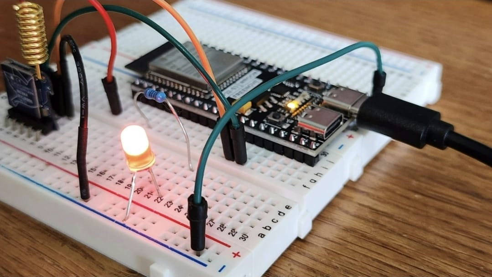
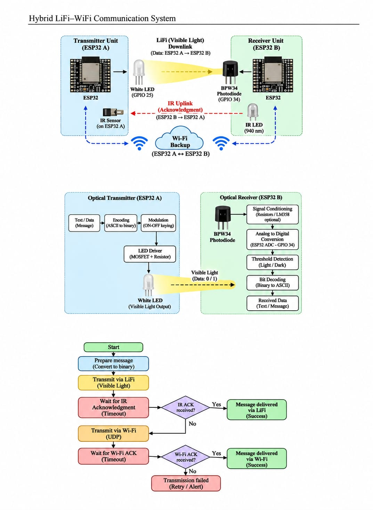
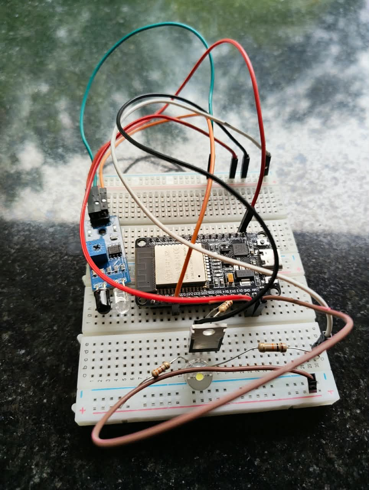
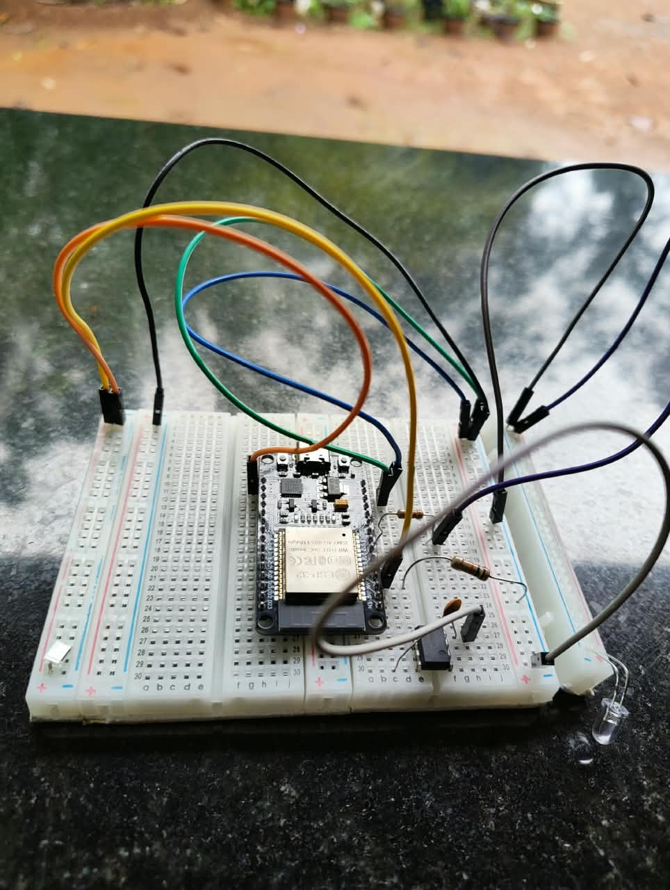
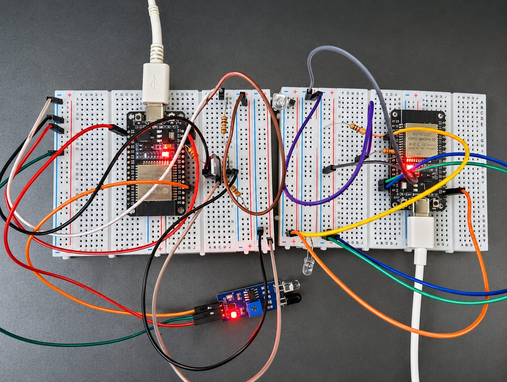

Explore LiFi
Investigate visible-light data transmission using an LED transmitter and photodiode receiver.
PROJECT / HARDWARE + SOFTWARE
COMMUNICATION SYSTEMS · ESP32 · IoT
Exploring visible-light communication as a primary data link, with Wi-Fi as a backup when the optical connection becomes unreliable.

This project explores a hybrid communication approach in which visible light is used for the primary LiFi data link. When the optical signal drops below a defined threshold, the system is intended to switch to Wi-Fi as a fallback channel.
The prototype is being developed around ESP32 boards and optical components. Alongside the visible-light data link, the proposed design includes a separate IR return path: once the receiver has received the complete data, it sends an ACK to the transmitter to confirm successful reception. Wi-Fi is planned as a fallback if the LiFi signal drops below its threshold.
Investigate visible-light data transmission using an LED transmitter and photodiode receiver.
Plan Wi-Fi as a fallback when the LiFi signal falls below the selected threshold.
Use an infrared (IR) return channel so the receiver can acknowledge that the transmitted data has been received successfully and completely.
The Wi-Fi backup communication is planned using UDP. Exact implementation details may change as prototype development progresses.
The ESP32 transmitter is intended to encode data and drive an LED, carrying the signal through visible light.
A BPW34 photodiode at the receiver detects the light signal; the receiver circuit is being developed around the selected components.
The system is designed to monitor the LiFi signal level against a threshold.
If the LiFi signal falls below the threshold, the planned logic switches communication to the Wi-Fi backup channel.
After receiving the transmitted data, the receiver sends an acknowledgment (ACK) back to the transmitter through an infrared (IR) link. The ACK indicates that the data has been received successfully and that the complete expected data has arrived.

Current project setup and prototype-development photographs.



The hardware prototype is in progress. System integration, link-switching validation and experimental measurements are not being presented as completed results. Future work includes completing the prototype, testing the optical link, validating the Wi-Fi fallback logic and recording performance measurements.